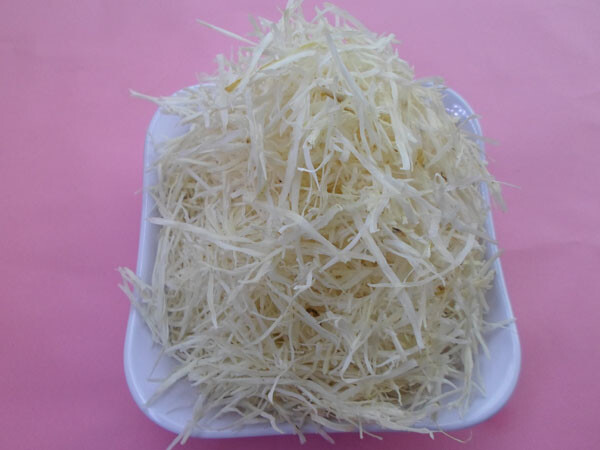

AFRICAN SALAD RECIPE
What You Should Know About African Salad
African salad or Abacha as it is common called is a native meal popular amongst the Nigerian Igbos of West Africa.
Abacha is one of the most popular food in eastern Nigeria, most due to the short time it takes to prep and cook it. It usually takes about 25-30minutes to prepare Abacha. It is white and crunchy and can be eaten dry as a snack with coconuts, roasted groundnuts and cashew-nuts.

Making Abacha
To make Abacha, you'll first need to get some tubers of cassava. Now there are a lot processes involved with making fresh and sumptuous Abacha but we'll be discussion just one of them.
The first thing to do is to get cassava tubers.
Wash them thoroughly and boil along with water for 20-30minutes, then peel off the raw cassava skin and then cut to tiny strips like you would a potato.
Then soak the sliced cassava in water for 18 hours. The last thing to do would be to wash thoroughly with clean water then sun-dry and store in an air-tight container.
That above is how dried Abacha looks like.
But if you live in a developed city, you probably wouldn't need to go through this cumbersome process, you could just buy the following ingredients from the market.
Ingredients for African Salad
- 6 to 8 cups of dried-abacha
- 2 cups of Ugba
- Half cup of crayfish
- 1 seasoning cube and onions
- 150ml of palm oil
- Edible powdered potash
- Salt and pepper to taste
- 3 garden eggs(optional)
- Utazi leaves(optional)
- Meat/dry fish or stock fish(optional)
Preparation Instructions
After getting the ingredients for Abacha, here's the next thing to do.
- Boil the dried-abacha for a 3 minutes, then sieve and keep in a bowl for three minutes.
- Blend your crayfish and pepper, and also slice your onions.
- Dissolve your powdered potash in about half a cup of clean water and filter out the dissolved potash into a pot.
- Add 100ml of palm oil into the pot and stir till a yellowish paste is formed, then add the crayfish and pepper and stir till mix.
- Add the ugba to the mixture and stir, then add the Abacha and salt. It is advisable to heat the Abacha for a few minutes before you use so it doesn't get cold before use.
- You African salad is done and ready for serving.
To find out about the nutritional benefits and risks associated with eating meals made from cassava, you can visit here